Using the laws of blackbody radiation, generates a synthetic image as an estimate of flux at the specified effective output wavelength or frequency, and/or a thermal map as an estimate of temperature. [more]
Categories: Flux
Keywords: blackbody radiation, channel synthesis
[hide]
[hide]
Many interesting phenomena emitting thermal radiation follow approximately the theoretical curve of a black body: hot stars, volcanic lava, the cosmic microwave background or the infrared emission from the Earth, for instance. Therefore their behavior can be modeled rather well by using Planck's law, which gives the spectral distribution of electromagnetic emission for a black body at a given temperature.
In astronomy, the received flux from a distant black body-like object (as a star) decreases inversely with the square of the distance. Hence we cannot obtain its temperature directly only from a single received flux; we have to know the distance to the object and its size, which in general is unknown. But fortunately, for a black body we can overcome this difficulty by recording its flux at two different wavelengths (i.e. through two different filters): the ratio of these two fluxes is independent on the distance and size of the emitter, and determines unambiguously the black body temperature.
In general this temperature is calculated from that ratio by using slow numerical methods, but B3Estimator (B3E for short) calculates it analytically, and hence faster. The mathematical details of the method are described in the references.[1]
As the method is very fast, B3E can do this calculation for every pixel in an image, in a reasonably short time. Therefore, just by taking two equalized images of the same object (for example, a galaxy) through two different filters, B3E can generate a new image of equivalent black body temperatures, assuming a black-body behavior for each pixel. In the new image, gray tones will be proportional to the temperature that each pixel should have if they were black bodies—note that this makes sense for objects like stars or even galaxies, but could be meaningless if it is applied to objects which do not behave as black bodies (as a fish). You can consider it as a measurement of how bluish or reddish a pixel is. The thermal image is an unsigned 16-bit integer image. To read properly the thermal values directly in degrees Kelvin, select the 16-bit integer readout range with the ReadoutOptions tool (for example, select Edit > Readout Options from the main menu and choose Binary integer range: 16).
Once B3E has this estimation of temperatures, it can easily estimate fluxes at any other wavelength. i.e. from the two input images, B3E can generate, at the desired wavelength, a new image of how the object would look like, assuming again a black body behavior for every pixel.
B3E needs equalized images to work, otherwise results can be meaningless. Regarding equalization, B3E comes in two "flavours":
flux = pixel_value × FLXRANGE + FLXMIN
[hide]
Notes
If your input images have been flux calibrated by using the FluxCalibration tool, B3E will use the generated FITS header keywords to equalize the images. Otherwise B3E will assume that you provide your images already equalized.
Units
B3E can work with different choices of flux units, but you must specify which ones to use. The gray tones in your images can be directly proportional to:
Choose the option suitable to your data.
Spectral position
Once you have selected your working units, you will have to specify for the filters used in each image, their effective wavelength in nm (or frequency in THz). For obtaining a new image of estimated flux at a third wavelength or frequency, you will also need to specify it (this is not needed for obtaining only a thermal image).
Output format
You can select to generate only a thermal map, only a synthetic image at a third wavelength, or both. In these two last cases, you can choose also to generate an out-of-range mask (a binary mask where white pixels indicate out-of-range flux values, and black pixels indicate negative flux values, in the output synthetic image).
There is a background reference section associated with each one of the input images.
B3Estimator will use pixels read from this image to compute an initial mean background level of the corresponding input image. If you leave this field blank (or with its default <target image> value), the target image will be also the background reference image during the B3Estimator process.
You should specify a view that represents the true background of the image. In most cases this means that you must select a view whose pixels are strongly dominated by the sky background, as it is being represented on the target image. A typical example involves defining a small preview over a free sky area of the target image, and selecting it as the background reference image. Even better than selecting a preview as a background reference image is using a region of interest (ROI).
Lower bound of the set of background pixels. Background reference pixels below this value will be rejected for calculation of mean background values.
Upper bound of the set of background pixels. Background reference pixels above this value will be rejected for calculation of mean background values.
When the whole image cannot be used to sample the background, a usual way to restrict sampling to background pixels is defining a preview and selecting it as the background reference image. In these cases a much better solution is using a region of interest (ROI). In B3Estimator, the background reference ROI defines a rectangular area of the background reference image that will be sampled to compute mean background values. The ROI is specified by four values expressed in pixels: the coordinates of its top left corner and its width and height. Instead of entering these values directly you can acquire them from an existing preview by clicking the From Preview button.
To enable the background reference ROI section, you have to check the corresponding Region of Interest group title checkbox. The BackgroundNeutralization tool also has a similar ROI functionality. When using ROIs, you usually will leave the background reference images with their default blank values (indicated as <target image> on the B3Estimator interface). This has the advantage that the process instance so defined is reusable: it can be applied to any image without requiring existence of specific previews. This is especially important to integrate B3Estimator instances with ProcessContainer.
Output background reference mask
If this option is selected, B3Estimator will create a new image window with a background reference mask. A background reference mask is white for pixels in the background reference image that have been used to calculate mean background levels; black anywhere else. You can use this mask to check whether the lower and upper limit parameters define a suitable range of values to select the pixels that you intend to use as a background reference.
[hide]
For this example we have used images of the Sombrero galaxy obtained by NASA Hubble Space Telescope, with the ACS WFC instrument. Specifically, the filters F435W and F555W (respectively at 435 and 555 nm) have been used. NASA distributes these images already calibrated, but not equalized. The image calibration comes in the FITS header keyword PHOTFLAM. The units of the value displayed in PHOTFLAM are erg × cm-2Å-1s-1. It is an energy flux, therefore we select in Intensity units the option Energy / Wavelength.
The value of PHOTFLAM in the F435W image is 3.14×10-19, and in the F555W image it is 1.95×10-19. We use these values to equalize both images, just dividing the F435W image by 3.14, and the F555W by 1.95 using PixelMath (the exponent part is not needed because it is common to both images). This way, in the new two images, the same amount of graytone corresponds to the same energy flux.
We introduce as input wavelengths 435 nm for the first image and 555 nm for the second. As we only want a thermal map in this example, we do not need to introduce an output wavelength. These are the two input images (we have used a screen transfer function (STF) to show the details, as the images are nearly black):
F435W:
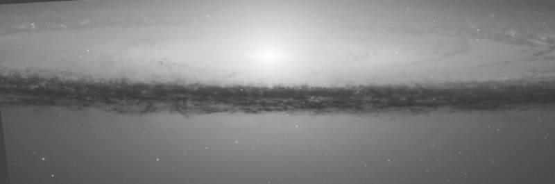F555W:
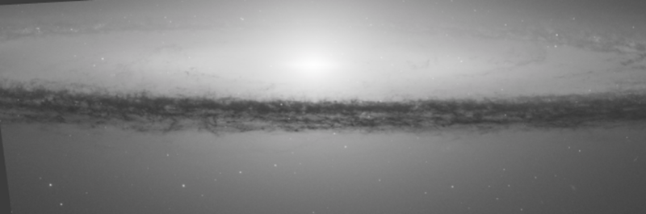And this is the output thermal image (linear scale):
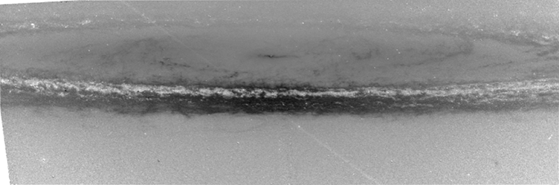In general it shows that the dust features have an equivalent black body temperature lower than the rest of the galaxy; that is, the light from these zones is reddish. This is what we would expect due to the reddening caused by the dust. In fact, in Earthward direction, the light from the center of the galaxy that crosses the dust ring comes directly towards us; therefore it should suffer a greater reddening than the one coming from the rest of the dust ring, where disperse—and therefore bluer–light contribution is higher. And indeed, the frontal zone of the dust ring in the thermal image is darker.
But inside the dust ring, a strange and unexpected feature appears: a narrow zone surrounding the galaxy, with high equivalent black body temperatures of about 7000 K black body (meanwhile in the "cold" dust zones, values are around 5000 K). Of course this does not indicate the true temperature of the dust, which is in fact much colder (almost an order of magnitude). But infrared Spitzer images of this galaxy show that this zone of the dust ring indeed glows brightly in infrared light, unveiling a disk of stars within the dust ring.
That is, the "hot" dust zone found by B3E is the fingerprint of this stellar formation zone: unresolved stars in the foreground of the dust ring, sticking out from under the dust, are contributing to give a bigger blue component to the light from the dust.
For this example we are going to use images of the central region of the Andromeda galaxy M31, obtained by the team Descubre Foundation/CAHA/OAUV/DSA (Vicent Peris (OAUV), Jack Harvey (SSRO), Steven Mazlin (SSRO), Gilles Bergond (CAHA)) with the 3.5m Calar Alto telescope, using the LAICA camera and the filters centered at 458, 489, 551 and 644 nm, from the ALHAMBRA survey filter set each one with a bandwidth of 31 nm (note that these are medium band generic purpose filters not optimized for line detection but for photometric redshift measures). These images have been already calibrated (flux calibrated in counts per second and nm) and registered. They are shown here (as in the previous example, we have used a screen transfer function to show the details):
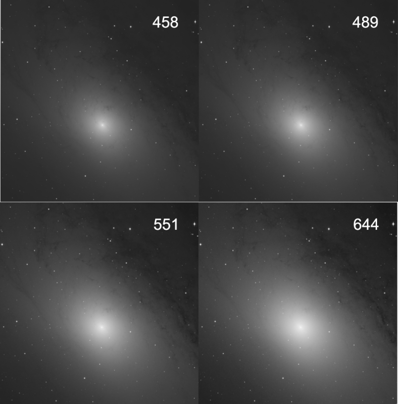H alpha and OIII emissions fall inside the 489 filter, meanwhile H and NII fall into the 664 one. Therefore we will use as input images the other two, i.e. 458 and 551, which are more representative of the continuum emission. Using them we will generate with B3E synthetic images at 489 and 664 nm.
Thus, we run B3E, select as Intensity units "Photons / Wavelength", and introduce as input wavelengths 458 nm for the first image, and 551 nm for the second one. As output wavelength we introduce 489 nm. We obtain a new estimated image of how M31 should be at 489 nm, if every pixel were behaving as a black body. Again we repeat these steps to obtain another synthetic estimated image at 664 nm.
Once these two new images have been obtained, we will compare them with the real images at these wavelengths, dividing the real image by the synthetic one with PixelMath. Indeed, what we will do is:
0.5 (real image)/(synthetic image)
Thus, the closer the similitude between the real and the synthetic image, the bigger the amount of 50% gray tone in the image. In the case of a complete similitude between the real and synthetic image, we would expect a completely flat gray image.
These are the result at 489 nm and 644 nm (the images are practically gray; the contrast has been enhanced; the angular marks have been added to remark the central zone of the galaxy):
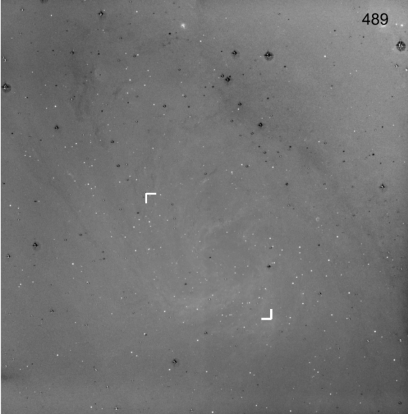 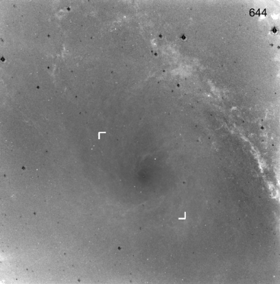As we can see, these images have very few structures (they are very gray), showing that a simulation of the continuum according to a black body gives rather good results (the dark rings at bright stars are due to the differences in PSF in the images taken with each filter). Using a linear interpolation/extrapolation instead of a black body model would introduce much more structures. This means that any structure appearing in these images has less probability to be an artefact, and it is much believable to be a real phenomenon. The black body model is a more realistic and natural way for estimating the continuum component, and thus, gives a better estimation of the intrinsic strength of features such as emission or absorption lines.
The marks in the central zone of both previous images indicate the zone zoomed in the following images (left and right ones). As can be seen, the left image shows a great amount of bodies (white dots) with strong emission respect to a black body (mainly OIII). The central image is a screen capture of Aladin, showing data of planetary nebulae. The right image shows four bright dots (mainly H alpha emission), their position marked with crosses in the three images:
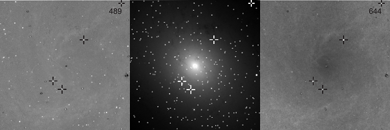Comparing the left image with the central one we can see that almost all those white dots are indeed planetary nebula in M31, with strong OIII emission. The objects in the right image can be seen also in the left image, but they do not appear in the central image. They are four nova candidates.
For this example we are going to use infrared data from NASA's IRAS Sky Survey Atlas (ISSA). Concretely, images in the 12, 60 and 100 Micron bands from the Galactic Plane Mosaic, centered at 90 degrees of galactic longitude. In this case, the images are distributed already calibrated in units of "Energy / Wavelength", indeed, MJy/sr/Micron. IRAS images come also equalized (the same energy flux is represented by exactly the same gray tone in all of them), and we can use the as they are without the need of doing anything else.
The complete original images are shown at the right part of the following images, and in the left part we show a zoom of their central zone, centered approximately at RA 22h, Dec +60 degrees. The small boxes inside these zooms will be explained soon afterwards:
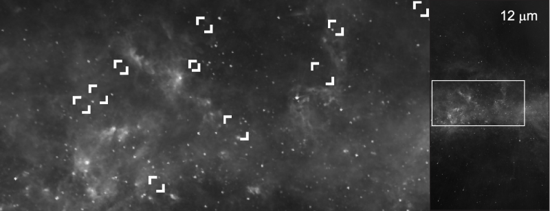 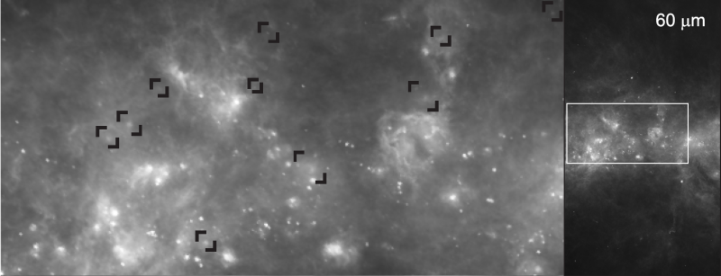 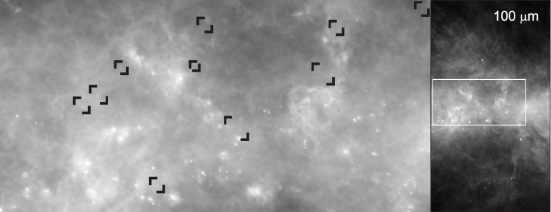As the wavelength units used were Microns, we have to convert wavelengths into nm before their use in B3E. As 1 Micron = 1000 nm, we will use 12,000, 60,000 and 100,000 nm.
In the 12 Microns band, the galactic plane is far from a blackbody behavior, as the emission from polycyclic aromatic hydrocarbon molecules dominates in the galactic plane at this wavelength, meanwhile in the 60 and 100 Micron bands the thermal emission from cold dust dominates, following a Planck distribution.
Given that in the 60 and 100 Micron bands we do expect blackbody behavior, we will use the images at these bands to generate a synthetic image at 12 Microns, and then divide the real one at 12 Microns by the synthetic one. Hence, the excess of emission in this ratio image will be representative of the presence of hydrocarbons; on the contrary, the darker the image, the closer to a blackbody behavior. This is what is shown in the following image:
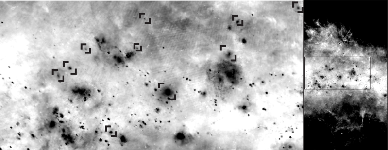In this image there is a cluster of dark objects which seem to behave as black bodies. These objects seem to be in the foreground, shielding the background hydrocarbon radiation emitted from the Galaxy. Some of them coincide with nebulae, clearly visible in the three infrared images. But there are many others (a selection marked with the boxes) nearly imperceptible in the infrared images. A part of these objects are related to stars—standing out the bright one close to the center, whose location coincides with the supergiant λ Cephei—, but not all of them. And vice-versa, only some stars have a counterpart in this "blackbodyness" image.
In all these cases, their equivalent black body temperature happens to be very low: they are compatible with a black body at ~50 K. These features seem to be dust globules, shielding the galactic plane emission, some of them protostars, others—as in the case of λ Cephei—an envelope surrounding the star.
For this final example we are going to use data from M97 in Ursa Major.[2]
As other planetary nebulae, the shine of M 97 comes mainly from the emissions from ionized hydrogen and oxygen atoms, what gives these objects their dominant reddish and greenish hues. But this object also has a considerable portion of light from the white dwarf that has been reflected by nebular particles. This mechanism makes its color bluer, and distinguishes this from other planetaries with a smaller reflection component. To estimate this diffuse light, two images obtained through narrow Stroemgren filters in a part of the spectrum without line emission, were used as input images: b filter at 463 nm and y filter at 547 nm. From them, and using B3E, we estimate the continuum emission at 450 nm, 550 nm and 650 nm, corresponding to the three channels of a RGB color image, according to the following scheme:
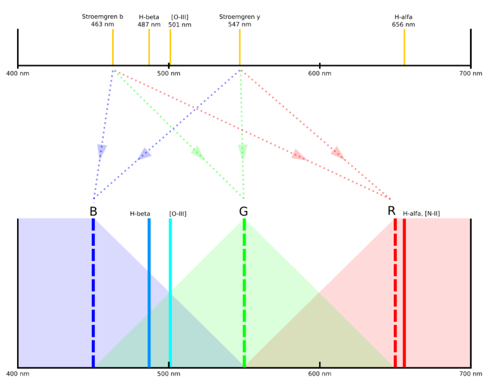Once we get the three synthetic images, we combine them in a new RGB image using the ChannelCombination tool. The result is the following image. It is a very good result as the diffusion process affects mainly to the bluish components of light, and as expected, the light diffused by the nebula is very blue:
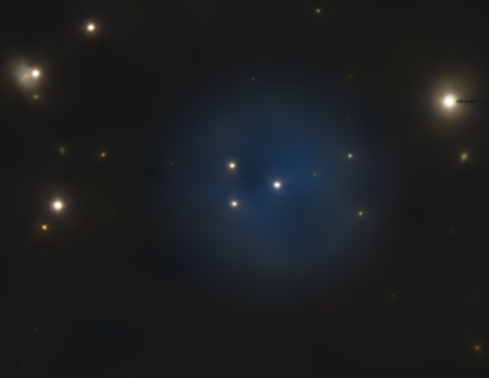Once combined this synthetic image with the (real) images obtained through H alpha, H beta and OIII filters, we get the final result:
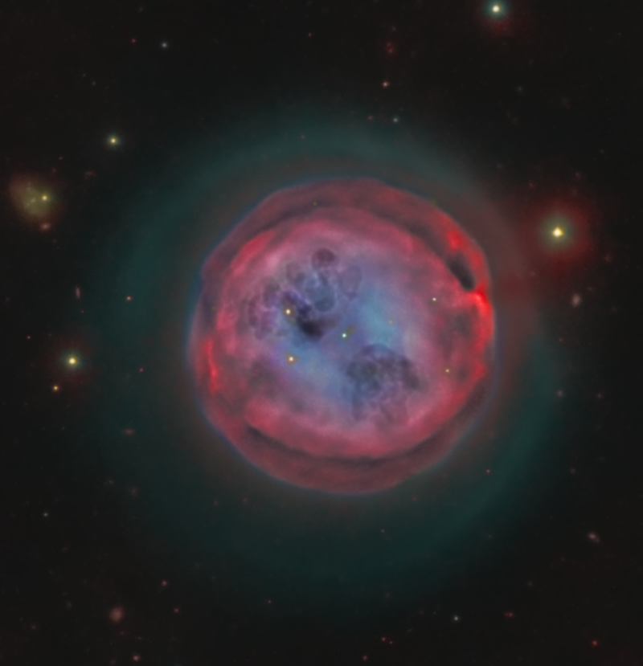[1] F. J. Ballesteros, New insights into black bodies, 2012 EPL 97 34008 (This is the main reference to be cited in any paper using B3E).
[2] The Owl Nebula, from the Documentary Photo Gallery of Calar Alto Observatory (Descubre/CAHA/OAUV/DSA), Vicent Peris (OAUV/DSA/PTeam), Jack Harvey (DSA/SSRO/PTeam), Steven Mazlin (DSA/SSRO), Jose Luis Lamadrid (DSA/CEFCA), Juan Fabregat (OAUV), Gilles Bergond (CAHA).
Copyright © 2012 Pleiades Astrophoto. All Rights Reserved.